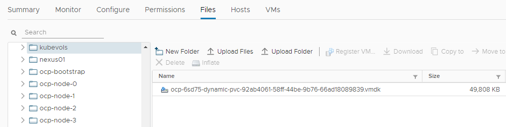

本文为 OCP 平台配置动态持久存储, 使用 vSphere Volume 和 Ceph RBD CSI
vSphere Volume
如果前面配置都正确, vSphere Volume 此时已经可用. 目前系统里应该只有一种 storageclass: thin(default), 其 provisioner 为 kubernetes.io/vsphere-volume. 建一个 pod 测试一下 1
2
3
4
5
6
7
8
9
10
11
12
13
14
15
16
17
18
19
20
21
22
23
24
25
26
27
28
29
30
31
32
33
34
35
36
37
38
39
40
41
42
43
44
45
46
47# 查看现有的 storageclass
oc get sc
NAME PROVISIONER AGE
thin (default) kubernetes.io/vsphere-volume 2d19h
oc project sandbox-1
# 我这里用的是私有仓库里的离线镜像
oc apply -f - <<EOF
---
apiVersion: v1
kind: Pod
metadata:
name: vsphere-volume-demo-pod
spec:
containers:
- name: web-server
image: quay.svc.vopsdev.com/devinfra/nginx:latest
volumeMounts:
- name: www-data
mountPath: /var/lib/www/html
volumes:
- name: www-data
persistentVolumeClaim:
claimName: vsphere-demo-pvc
readOnly: false
---
apiVersion: v1
kind: PersistentVolumeClaim
metadata:
name: vsphere-demo-pvc
spec:
accessModes:
- ReadWriteOnce
volumeMode: Filesystem
resources:
requests:
storage: 1Gi
storageClassName: thin
EOF
# 检查一下结果是否正常
oc get pod,pvc
NAME READY STATUS RESTARTS AGE
pod/vsphere-volume-demo-pod 1/1 Running 0 20s
NAME STATUS VOLUME CAPACITY ACCESS MODES STORAGECLASS AGE
persistentvolumeclaim/vsphere-demo-pvc Bound pvc-ae6dbae7-bb1f-460c-87d8-79ccbc01173d 1Gi RWO thin 20s
前往 vSphere Datastore 下查看产生的 vmdk 
Provisioner 会在 install-config.yaml 文件中指定的 platform.vsphere.defaultDatastore 下创建 kubevols 目录, 并在此目录下创建 vmdk.
如果 pvc 出现长时间 pending, oc describe 提示
Failed to provision volume with StorageClass "thin": folder 'xxx' not found
请检查是否在 vSphere Datacenter 下创建了 metadata.name 对应的目录.
vSphere volume 的性能取决于你的 datastore 的性质.
Ceph RBD
此处仅仅展示 OCP 和现有 Ceph 集群通过 CSI 对接的配置过程. 如果你在裸机上部署 OCP 同时又有现存的 Ceph 集群, 可以考虑这种方式整合. 如果你的 OCP 本身跑在 vSphere 虚拟化平台上, 那还是请使用 vSphere Volume 以确保稳定和性能
原先在 OCP 3.11, Atomic Host 自带 ceph-common 工具可以访问 Ceph 集群. 但是到了 OCP 4, RHCOS 上不再提供 ceph-common, 此时需要通过 CSI 来和现有的 Ceph 集群对接.
Ceph 端准备工作
现有的 Ceph 集群版本 1
ceph version 14.2.4 (75f4de193b3ea58512f204623e6c5a16e6c1e1ba) nautilus (stable)
1
2
3ceph osd pool create okd 32
ceph osd pool application enable okd rbd
ceph auth get-or-create client.okd mon 'profile rbd' osd 'profile rbd pool=okd' -o ceph.client.okd.keyring
OCP 端
下载 ceph-csi.git 根据实际环境信息配置后部署 1
2
3
4
5
6
7
8
9
10
11
12
13
14
15
16
17
18
19
20
21
22
23
24
25
26
27
28
29
30
31
32
33
34
35
36
37
38
39
40
41
42
43
44
45
46
47
48
49
50
51
52
53
54
55
56
57
58
59
60
61
62
63
64
65
66
67
68
69
70git clone https://github.com/ceph/ceph-csi.git
cd ceph-csi
# 当前最新 release 为 2.0.0
git checkout v2.0.0
cd deploy/rbd/kubernetes
oc new-project ceph-csi
# 参考 https://docs.ceph.com/docs/master/rbd/rbd-kubernetes/
# clusterID 可以使用 ceph mon dump 里的 fsid
oc apply -f - <<EOF
apiVersion: v1
kind: ConfigMap
data:
config.json: |-
[
{
"clusterID": "2e44e736-d686-4c86-8cf5-ecb7d91ccf2b",
"monitors": [
"192.168.11.21:6789",
"192.168.11.22:6789",
"192.168.11.23:6789"
]
}
]
metadata:
name: ceph-csi-config
namespace: ceph-csi
EOF
# 创建 secret 保存 cephx keyring 认证方式的 user/key
oc apply -f - <<EOF
apiVersion: v1
kind: Secret
metadata:
name: csi-rbd-secret
namespace: ceph-csi
stringData:
userID: okd
userKey: xxx
EOF
# 注意调整 namespace
oc apply -f csi-provisioner-rbac.yaml
oc apply -f csi-nodeplugin-rbac.yaml
# 调整 scc
oc adm policy add-scc-to-user privileged system:serviceaccount:ceph-csi:rbd-csi-nodeplugin
oc adm policy add-scc-to-user privileged system:serviceaccount:ceph-csi:rbd-csi-provisioner
# 注意调整 namespace
# 如果是隔离环境, 需要把下面几个镜像离线到私有镜像仓库, 然后调整镜像的位置
# quay.io/cephcsi/cephcsi:v2.0.0
# quay.io/k8scsi/csi-provisioner:v1.4.0
# quay.io/k8scsi/csi-snapshotter:v1.2.2
# quay.io/k8scsi/csi-attacher:v2.1.0
# quay.io/k8scsi/csi-resizer:v0.4.0
# quay.io/k8scsi/csi-node-driver-registrar:v1.2.0
oc apply -f csi-rbdplugin-provisioner.yaml
oc apply -f csi-rbdplugin.yaml
# 确定 csi-rbdplugin 和 csi-rbdplugin-provisioner pod 都正常起来了
oc get all
NAME READY STATUS RESTARTS AGE
pod/csi-rbdplugin-7qqtp 3/3 Running 0 5m
pod/csi-rbdplugin-f8grj 3/3 Running 0 5m
pod/csi-rbdplugin-provisioner-77497b775c-25624 6/6 Running 0 5m
pod/csi-rbdplugin-provisioner-77497b775c-2crxf 6/6 Running 0 5m
pod/csi-rbdplugin-provisioner-77497b775c-lhgtl 6/6 Running 0 5m
pod/csi-rbdplugin-x59fc 3/3 Running 0 5m
...
测试
先创建 storageclass
1 | oc apply -f - <<EOF |
然后再创建一个使用 pvc 的 pod 测试 ceph rbd storageclass
1 | oc project sandbox-1 |